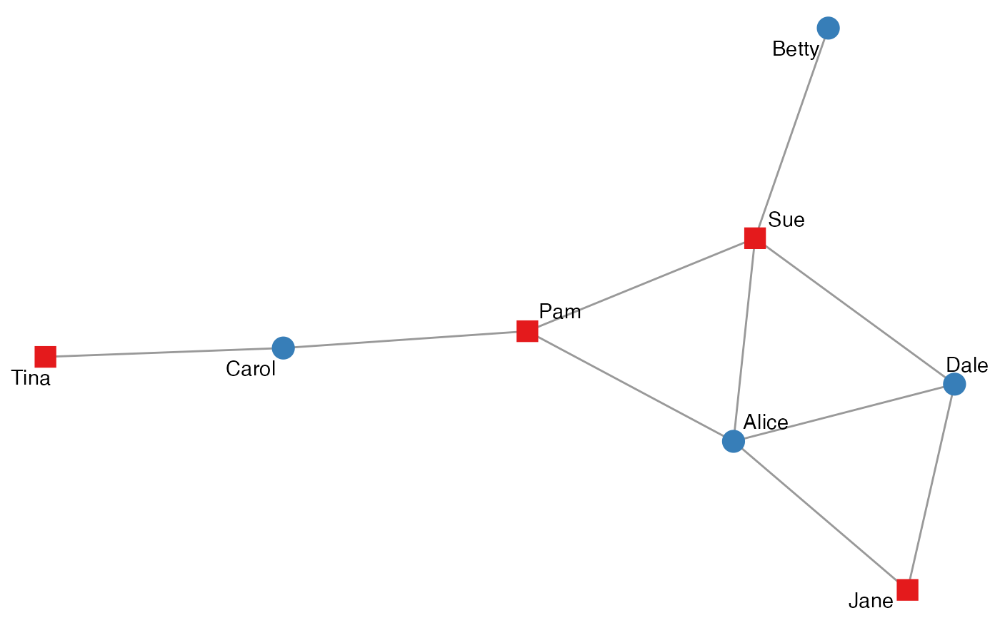
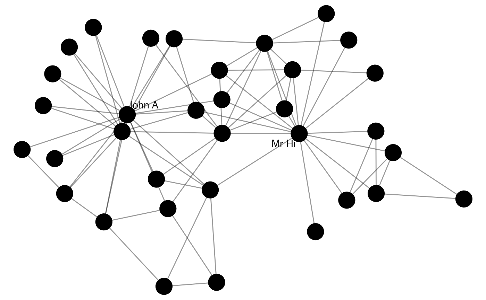
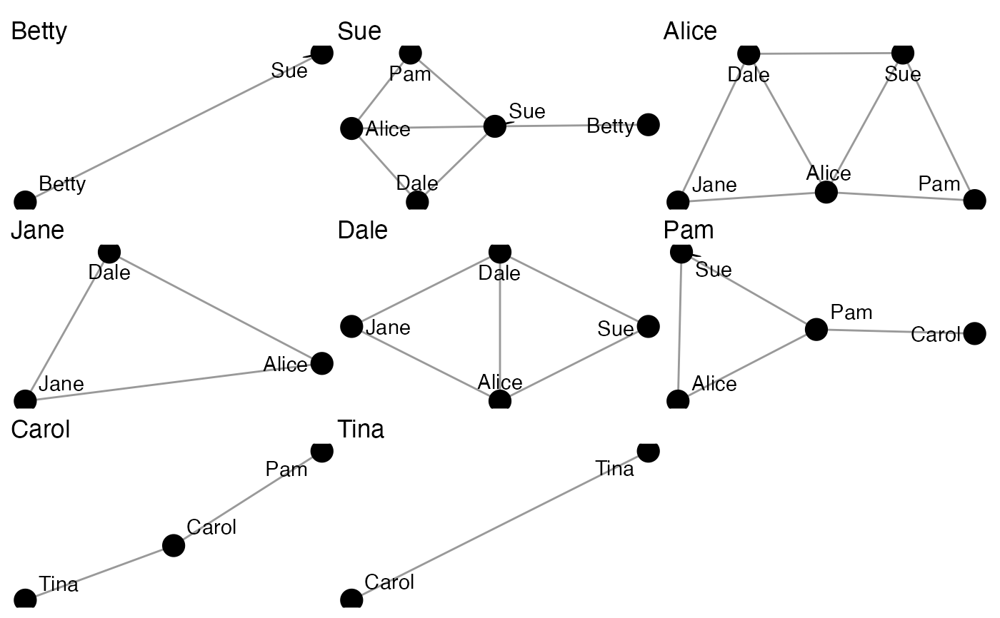

The aim of this function is to provide users with a quick and easy graphing function that makes best use of the data, whatever its composition. Users can also tailor the plot according to their preferences regarding node size, colour, and shape. The function also supports visualisation of network measures such as centrality.
autographr(
.data,
layout = "stress",
labels = TRUE,
node_color = NULL,
node_shape = NULL,
node_size = NULL,
edge_color = NULL,
...
)
autographs(netlist, ...)
autographd(
tlist,
keep_isolates = TRUE,
layout = "stress",
labels = TRUE,
node_color = NULL,
node_shape = NULL,
node_size = NULL,
edge_color = NULL
)http://blog.schochastics.net/post/animating-network-evolutions-with-gganimate/
http://blog.schochastics.net/post/animating-network-evolutions-with-gganimate/
A manynet-consistent object.
An igraph, ggraph, or manynet layout algorithm, currently defaults to 'stress'.
Logical, whether to print node names as labels if present.
Node variable in quotation marks to be used for coloring the nodes. It is easiest if this is added as a node attribute to the graph before plotting.
Character string in quotation marks referring to the name of a node attribute already present in the graph to be used for the shapes of the nodes. Shapes follow the ordering "circle", "square", "triangle", so this aesthetic should be used for a variable with only a few categories.
Node variable in quotation marks to be used for the size of the nodes. This can be any continuous variable on the nodes of the network. Since this function expects this to be an existing variable, it is recommended to calculate all node-related statistics prior to using this function.
Tie variable in quotation marks to be used for coloring the nodes. It is easiest if this is added as an edge or tie attribute to the graph before plotting.
Extra arguments to pass on to autographr()/ggraph()/ggplot().
A list of migraph-compatible networks.
The same migraph-compatible network listed according to a time attribute, waves, or slices.
Would you like to remove vertices that do not have any adjacent edges in each frame? TRUE by default. If FALSE, deletes isolated vertices in each frame.
A ggplot2::ggplot() object.
autographr(): Graphs a network with sensible defaults
autographs(): Graphs a list of networks
with sensible defaults
autographd(): Graphs an dynamic (animated) network
with sensible defaults
Other mapping:
attributes(),
is(),
properties
ison_adolescents %>%
mutate(shape = rep(c("circle", "square"), times = 4),
color = rep(c("blue", "red"), times = 4)) %>%
autographr(node_shape = "shape", node_color = "color")
#> This graph was created by an old(er) igraph version.
#> Call upgrade_graph() on it to use with the current igraph version
#> For now we convert it on the fly...

autographr(ison_karateka, node_size = 8)
#> This graph was created by an old(er) igraph version.
#> Call upgrade_graph() on it to use with the current igraph version
#> For now we convert it on the fly...

autographs(to_egos(ison_adolescents))
